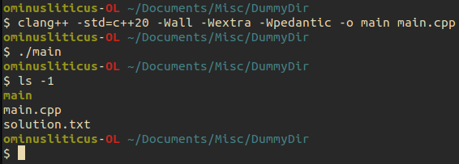

Creating a C++ Project#
In this chapter we describe how C++ compilation works, how to setup a C++ project using a build system, and create a sample project using our RK4 example from the last chapter. By the end of this chapter, you should be able to:
Describe what a C++ compiler does/how it works
Compile C++ files into an executable program
Generate a Makefile to build your project
Getting familiar with the compiler#
We are now dangerous enought with C++ to be able to solve differential equations. However, it is rare for a C++ program to be expressible in a single file. This is typically because we use files to logically organize and separate distinct parts of code. In C++, there are two types of files:
Header files: these typically contain function declarations, class defintions, and templated code (this is a whole can of worms). These are easily identified by their file ending:
.h,.hpp,.hxxand a couple others (import is the h).Translation units: these typically contain function bodies and static content which does not matter for other translation units. These are easily identified by their file ending:
.cpp,.C,.cxx, and several other (import is the c).
C++ is a compiled language, meaning that what you write needs to translated, by a compiler, into machine code for the computer to understand.
The compilation process has several stages, but the only two that really matter for us are machine code generation and linking steps.
During the machine code generation step, the compiler pastes all header files into a translation unit and outputs and object file (a .o file).
During the linking steps, all the .o files are combined into and executable.
Linking is important because all the header files tell the compiler is that a function exists, not where to find it.
The linker goes through all the .o files and matches function names to their definitions.
The compiler can distinguish between header files and translation units by their file endings.
The two most common compilers are gcc (the Gnu C compiler) and clang a much newer compiler with more fancy features that gcc.
How these work unde the hood is completely irrelevant to us, and for the sake of these tutorials I will use clang as this is readily available on MacOS (install gcc can be a pain).
As with any command, you should always explore what functionality the command has by querying it with --help option.
The first several lines for clang --help should look like this:  As you can see, there is far more information here than we care to digest.
Luckily, we don’t need all this; the flags we care about are
As you can see, there is far more information here than we care to digest.
Luckily, we don’t need all this; the flags we care about are
-std=<standard>- this specifies which ISO standard the compiler should use. The most recent standard inc++23, but for our purpose, we will always use thec++20option.-Wall -Wextra -Wpedantic- these three flags tell the compiler to be extra fastidious with looking for potential errors or mistakes you could have made in writing your code, like declaring an unused variable, not providing a return statement for a function, or using uninitialized variables.-c- this tells the compiler to output a.ofile as described abouve-o- this allows us to specify the output file path/name
Compiling your first program#
We are now ready to compile your first program.
You will want to copy the exam,ple code for th RK4 method into a file named main.cpp.
Then, open a terminal and navigate to the directory where you saved the main.cpp file.
Now, we can execute the following command
clang++ -std=c++20 -Wall -Wextra -Wpedantic -o main main.cpp
This command creates an executable called main using the input file main.cpp.
:::{note}
We did not use the -c flag here.
This will only really become import when we have multiple files and complicated projects.
For more complex projects, we will use build systems that will do much of this work for us.
:::
To execute the program, we run the comand
./main
This should have created a file names solution.txt in your directory

Build systems for C++#
There are many ways to setup large complicated projects and automate their compiling and linking process. The systems that facilitate this automation are called build systsems. Some popular ones are:
Makefiles
CMake
Premake
Meson
magini (my very own, and not yet popular)
Shell scripting
Below, I will give examples of Makefiles and CMake on how to setup you build script. Learning these is like learning another programming language (besides magini), and will often come with its own set of growing pains. I will not try to develop much of your fluency in these, and leave it to your disgression, which build system you try. Whenever possible, I will give the build scripts in the four examples listed above.
Creating a project structure#
The words project structure essentailly boil down to how the files are organized within you directories. There might be a meaningful way to group them, say because a bunch of files are for math and a bunch of others are for plotting routines. Regardless, build systems have to be made aware of this structure to know how to build your project properly. Some of the most annoying build errors arise because some one else’s build instructions had loopholes which you have to figure out how to fill.
We are now going to separat our main.cpp file into three files
main.cpp- it will only containint mainfunction that calls theRK4function defined inRK4.cppRK4.hpp- it will contain the decalaration of theRK4functionRK4.cpp- it will contain the definition of theRK4function
#include <fstream>
#include <iomanip> // input/output manipulation - used to format output
#include <cmath> // For std::exp and std::cosh
#include "RK4.hpp"
// We don't have to define the function yet, so the compiler knows the symbol exists.
// This is called _prototyping a function_
double f(double x, double t);
int main()
{
// Open output file
std::fstream fout("solution.txt", std::fstream::out);
double t_0 = 0.0; // Start time
double x_0 = 0.0; // Initial condition
double t_f = 10.0; // End time
const size_t N = 100; // Number of steps
double dt = (t_f - t_0) / static_cast<double>(N);
double x[N];
RK4(x, x_0, t_0, t_f, N, f);
for (size_t i = 0; i < N - 1; ++i)
fout << t_0 + static_cast<double>(i) * dt << ' ' << x[i] << '\n';
// Our logic above implies that we would not output the last step, so we do it
// explicitly
fout << t_f - dt << ' ' << x[N - 1];
// Close file
fout.close();
return 0;
}
// An arbitrary choice
double f(double x, double t)
{
return std::exp(t) / std::cosh(x);
}
#ifndef _RK4_HPP_
#define _RK4_HPP_
# Needed for size_t
#include <stddef.h>
// Functions should _documented_ with their definitions to tell others what it does
// and how to use it. What this looks like is up to you, although there are standards
// like doxygen
/* The Runge-Kutta method at 4-th order for ordinary differential equations
*
* Arguments:
* ----------
* double x pointer to array storing numerical solution
* double t_0 Start time
* double x_0 Initial condition
* double t_f End time
* size_t N Number of steps
* f a function pointer to a function of return type double and takes two
* arguments of type double
*/
void RK4(double *x,
double x_0,
double t_0,
double t_f,
size_t N,
double (*f)(double,double));
#endif
#include "RK4.hpp"
void RK4(double *x,
double x_0,
double t_0,
double t_f,
size_t N,
double (*f)(double, double))
{
// Integral numbers and floating point numbers are reppresented differently in binary
// To make sure the compiler knows which types are being multiplied we can hint to it
// what the types should be by casting, in this case `static_cast`-ing (meaning the
// compiler can do this at compile times), the desired type.
double h = (t_f - t_0) / static_cast<double>(N);
double k_1, k_2, k_3, k_4;
double t = t_0;
x[0] = x_0;
for (size_t n = 0; n < N - 1; ++n)
{
// Calculate next step
k_1 = f(x[n], t_0);
k_2 = f(x[n] + 0.5 * k_1 * h, t + 0.5 * h);
k_3 = f(x[n] + 0.5 * k_2 * h, t + 0.5 * h);
k_4 = f(x[n] + k_3 * h, t + h);
x[n + 1] = x[n] + h * (k_1 + 3.0 * k_2 + 3.0 * k_3 + k_4);
// Update time
t += h;
}
}
This is a very C-style form of programming.
We have used the pointer * notation to tell C++ to only keep track of where the array of string starts.
This means that when we edit and entry in the array, x[i], we edit it in place (overwrite its value).
Such functionality is convenient when you data is very large and it would be expensive to spend CPU cycles copying from one address to another address.
In the case of the function pointer (*), functions always have fixed address in programs (this is for linking to make sense).
You can name the pointer to the address of a function, like we did, by adding a variable name after the astric: (*f).
In the function body, we use f as any other function.
A C++ style would take advantage of template parameters and variadic templates. I inlcude here an example without going into any detail, just to show how different two can be
Click to see the more moden C++-style code
#include <fstream>
#include <iomanip> // input/output manipulation - used to format output
#include <cmath> // For std::exp and std::cosh
#include <array>
#include "RK4.hpp"
// We don't have to define the function yet, so the compiler knows the symbol exists.
// This is called _prototyping a function_
double f(double x, double t);
int main()
{
// Open output file
std::fstream fout("solution.txt", std::fstream::out);
double t_0 = 0.0; // Start time
double x_0 = 0.0; // Initial condition
double t_f = 10.0; // End time
const size_t N = 100; // Number of steps
doublt dt = (t_f - t_0) / static_cast<double>(N);
std::array<double, N> x;
RK4<N>(x, x_0, t_0, t_f, N, f);
for (size_t i = 0; i < N - 1; ++i)
fout << t_0 + static_cast<double>(i) * dt << ' ' << x[i] << '\n';
// Our logic above implies that we would not output the last step, so we do it
// explicitly
fout << t_f - dt << ' ' << x[N - 1];
// Close file
fout.close();
return 0;
}
// An arbitrary choice
double f(double x, double t)
{
return std::exp(t) / std::cosh(x);
}
#ifndef _RK4_HPP_
#define _RK4_HPP_
#include <array>
#include <function>
// Functions should _documented_ with their definitions to tell others what it does
// and how to use it. What this looks like is up to you, although there are standards
// like doxygen
/* The Runge-Kutta method at 4-th order for ordinary differential equations
*
* Arguments:
* ----------
* std::array<double, N>& x reference to array storing variable
* double t_0 Start time
* double x_0 Initial condition
* double t_f End time
* size_t N Number of steps
* std::function<double(double, double)> f a function abstraction for function of
* return type double and takes one
* argument of type double
*/
template<int N>
void RK4(std::array<double, N>& x,
double x_0,
double t_0,
double t_f,
std::function<double(double, double)> f)
{
// Integral numbers and floating point numbers are reppresented differently in binary
// To make sure the compiler knows which types are being multiplied we can hint to it
// what the types should be by casting, in this case `static_cast`-ing (meaning the
// compiler can do this at compile times), the desired type.
double h = (t_f - t_0) / static_cast<double>(N);
double k_1, k_2, k_3, k_4;
double t = t_0;
x[0] = x_0;
for (size_t n = 0; n < N - 1; ++n)
{
// Calculate next step
k_1 = f(x[n], t_0);
k_2 = f(x[n] + 0.5 * k_1 * h, t + 0.5 * h);
k_3 = f(x[n] + 0.5 * k_2 * h, t + 0.5 * h);
k_4 = f(x[n] + k_3 * h, t + h);
x[n + 1] = x[n] + h * (k_1 + 3.0 * k_2 + 3.0 * k_3 + k_4);
// Update time
t += h;
}
}
#endif
Writing a build script#
With the project structure in hand, we can set about writing a build script. Below I include build scripts for this projects and how to run them. Some can be extended to more complicated projects with minimal work, and none show the truly show how truly complex the build scripts themselves can actually be. As usual, I leave comments in the code to describe what is actually happening
An online resource to introduce you to Makefiles can be found here. Here we give a Makefile that is pretty generic and easily extendible to larger projects. One can include Makefiles to extend the build steps even further, but we omit this step.
# Define variables to store paths to source files and build area
SRC = ./source/
OBJ = ./build/
# Include paths to header files
INC = -I $(SRC)
# Use POSIX command to find all files that end in ".cpp"
SRC_FILES := $(shell find $(SRC) -name '*.cpp')
# You can add more files to the this variable using
# SRC_FILES += # files
# Generate object files list from sources
# Here the `%` does a greedy match (see regex greedy matchin for more)
OBJ_FILES := $(patsubst $(SRC)%.cpp,$(OBJ)%.o,$(SRC_FILES))
# This is to help you see what the variables we just created contain
$(info $SRC_FILES)
$(info $OBJ_FILES)
# Get uname of your operating system (this matters when you build on MacOS or Linux
UNAME_S := $(shell uname -s)
# Print uname to console
$(info $$UNAME_S is [$UNAME_S])
# Branch on OS, for now they are the same, but they don't have to be
ifeq ($(UNAME_S),Linux)
# Our standard compiler and flags
CC = clang++ -std=c++20 -Wall -Wextra -Wpedantic
# A level of optimization the compiler apply to make code run faster
OPT = -O3
else
# Our standard compiler and flags
CC = clang++ -std=c++20 -Wall -Wextra -Wpedantic
# A level of optimization the compiler apply to make code run faster
OPT = -O3
endif
# Make options useful for building more complex projects
# -MMD tells make to generate a dependency file for every translation unit
# -MP tells make to generate a dependency file for every header file
# In this way, whenever any file is editted, make triggers a rebuild of the dependent
# files
MAKE_OPTS = -MMD -MP
# This tells make file where to find the dependencies
-include $(OBJ_FILES:.o=.d)
# define variable with path to executable
EXE = example
# Define build commands
all: $(EXE)
# Here $@, $^ and $< are called _automatic variables_
# more info can be found here:
# https://www.gnu.org/software/make/manual/html_node/Automatic-Variables.html
#
# The ones we use mean
# $@ current build target
# $^ all prerequisites for build target
# $< first prerequisite for build target
#
# Lastly, -MMD tells `make` to see if any header files have been updated
# Make sure these are tabs!! Otherwise you get a build error
$(EXE): $(OBJ_FILES)
$(CC) $(OPTS) $(MAKE_OPTS) $(INC) $^ -o $@
$(OBJ)%.o : $(SRC)%.cpp
# mkdir -p $(@D) # if you need to create a directory
$(CC) $(OPTS) $(MMAKE_OPTS) $(INC) $< -o $@ -c
clean:
rm -rf build/*
We have the project setup with the current structure
Before running the build command, you want to make sure that your build directory exists:
mkdir build

To execute the build command, you would then just run
make
If you wish to have a quicker build time, you can tell make how many cores to use to
build your project using the -j or --jobs flags
make -j8
After building, the executable should have been created
We can now run the executable as
./example
Nothing here yet
Expand if you want to see an example with my own build systme
`magini` is a build system that I am working on for myself. The primary idea is that one should not have to learn another programming language to build a project. So it is purely implemented in C++. One has have the header file from [my repository](https://codeberg.org/ominusliticus/magini.git), and then write a semi-standard `magini.cpp` file ```c++ #define MAGINI_COMPILER "clang++" #define MAGINI_SAVE_OUTPUT #define MAGINI_IMPLEMENTATION #include "third_party/magini/magini.hpp"using namespace magini;
int main([[maybe_unused]] int argc, char** argv) { MAGINI_INITIATE_LOGGING; print_disclaimer();
REBUILD_MAGINI();
BuildTree build_tree;
build_tree.has_libraries = false;
TRY_MAIN(add_director_build_tree(build_tree, "./source"));
auto executable = TRY_MAIN(build(build_tree, {}, {"-I ./source"}, {}));
TRY_MAIN(execute({ executable.c_str() }));
return 0;
}
But we will not develop this idea to much further in these notes.
Feel free to reach out to me if you are interested!
</details>